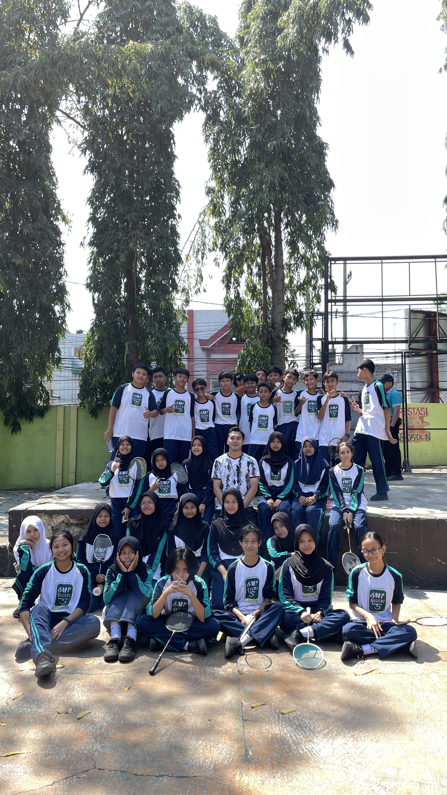
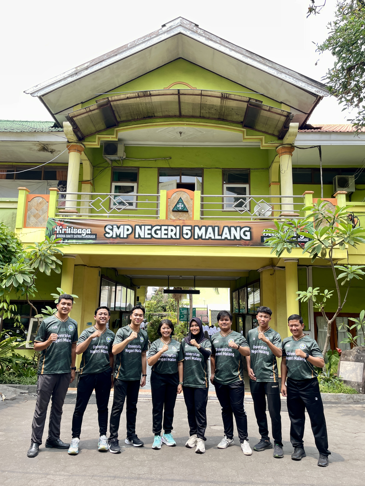
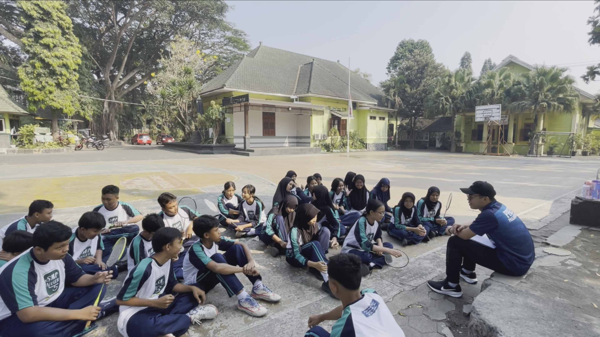
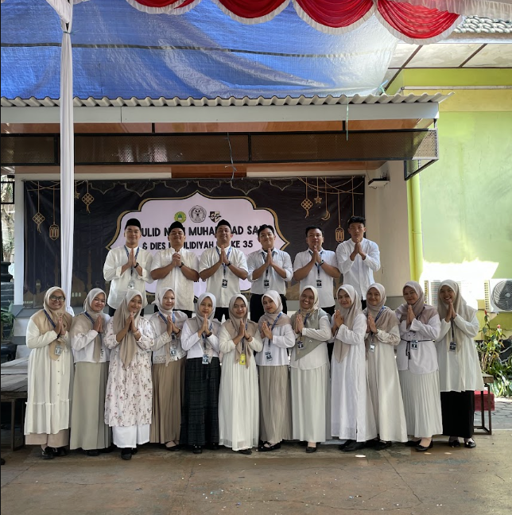
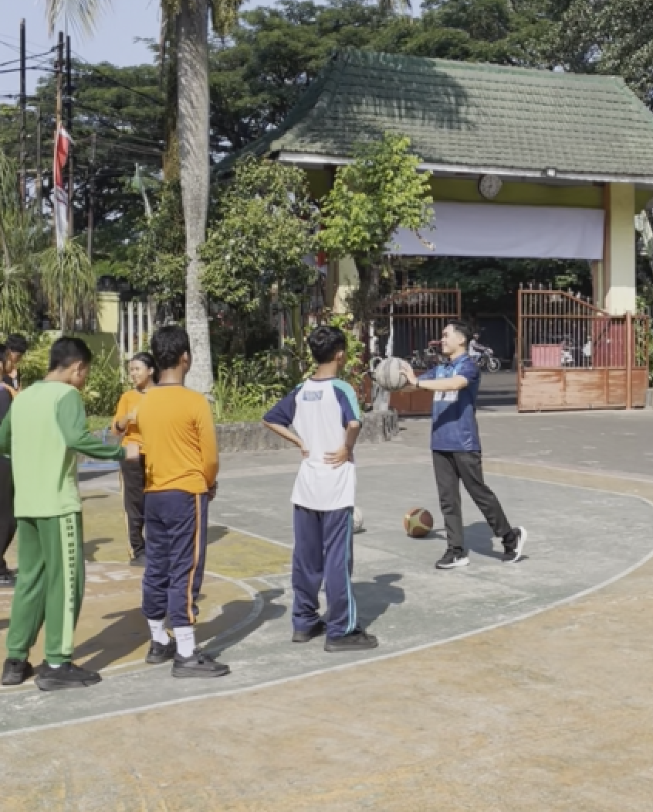

01
Connection (Keterkaitan)
Ringkasan materi dan topik utama yang dipelajari dalam mata kuliah.
Halo, saya Wahyu Fajar Fajriyansah.
Saya adalah calon guru PJOK yang memiliki ketertarikan pada teknologi pendidikan dan
pembelajaran yang berpusat pada murid. Melalui portofolio ini, saya mendokumentasikan perjalanan
belajar, pengalaman mengajar, projek, serta berbagai karya yang menjadi bagian dari proses saya
untuk terus berkembang sebagai guru PJOK.
Mendidik melalui gerak, bertumbuh dalam proses, berkarakter untuk masa depan
Mengenal lebih dekat pandangan, tujuan, dan langkah yang ingin saya wujudkan sebagai calon guru PJOK.
Bagi saya, pendidikan bukan hanya tentang menyampaikan pengetahuan, tetapi tentang menciptakan ruang bagi peserta didik untuk berkembang, mengeksplorasi potensi, dan belajar menjadi pribadi yang mampu menghadapi perubahan.
Mewujudkan pendidikan Indonesia yang bermakna, menyenangkan, inklusif, dan berpusat pada kebutuhan siswa. Mendorong siswa agar tidak hanya menghafal materi, tetapi juga memahami, menerapkan, dan merefleksikan apa yang dipelajari. Membangun budaya belajar yang aktif, kolaboratif, dan menghargai setiap proses perkembangan siswa. Mendukung pendidikan yang membentuk generasi berkarakter, mandiri, kritis, dan mampu menghadapi tantangan masa depan.
Menjadi guru yang mampu menciptakan pembelajaran yang bermakna, menyenangkan, dan sesuai dengan kebutuhan siswa. Menjadi guru yang tidak hanya menyampaikan materi, tetapi juga membantu siswa memahami proses dan makna pembelajaran. Membangun suasana kelas yang mendorong siswa berani bertanya, berdiskusi, menyampaikan pendapat, dan melakukan refleksi. Menjadi guru yang reflektif, terbuka terhadap evaluasi, dan terus mengembangkan diri.
Menerapkan pembelajaran bermakna Mendorong pembelajaran aktif dan kolaboratif Membiasakan refleksi Melakukan evaluasi berkelanjutan Mengembangkan pembelajaran yang inklusif Terus belajar dan berinovasi
Kumpulan materi, refleksi, artefak, dan penerapan dari berbagai mata kuliah yang dipelajari.
Pembelajaran yang berorientasi pada pemahaman bermakna, refleksi, dan penerapan dalam konteks pembelajaran.
Ringkasan materi dan topik utama yang dipelajari dalam mata kuliah.
Pemikiran dan pembelajaran yang diperoleh selama mengikuti proses pembelajaran.
Hasil tugas, proyek, atau dokumen yang dihasilkan selama proses pembelajaran.
Contoh penerapan pembelajaran dalam praktik sebagai seorang pendidik.
Contoh penerapan pembelajaran dalam praktik sebagai seorang pendidik.
Contoh penerapan pembelajaran dalam praktik sebagai seorang pendidik.
Pengalaman saya dalam mengajar, dan terus berkembang di SMP Negeri 5 Malang
Siklus 1
Siklus 2
Siklus 3
Siklus 1
Siklus 2
Siklus 3
Siklus 4
Dokumentasi praktik mengajar mandiri melalui empat siklus pembelajaran yang telah dilaksanakan.
Dokumentasi rancangan, materi, media, video praktik mengajar, dan instrumen penilaian pada Siklus 1.
Isi atau deskripsi Modul Ajar.
Isi atau deskripsi LKPD.
Isi atau deskripsi dokumentasi atau video praktik.
Isi analisis konteks pembelajaran.
Isi analisis tujuan pembelajaran.
Isi analisis kelebihan.
Isi analisis kekurangan.
Dokumentasi artikel ilmiah sebagai bagian dari perjalanan akademik dan pengembangan profesional.
Tuliskan deskripsi singkat mengenai artikel, topik yang dibahas, atau konteks penelitian yang dilakukan.
Dokumentasi kegiatan pembelajaran, praktik mengajar, dan berbagai pengalaman selama proses menjadi pendidik.






Dokumentasi video praktik pembelajaran dan proses mengajar di kelas.
Dokumentasi proses pembelajaran PJOK yang memperlihatkan kegiatan mengajar dan aktivitas peserta didik.
Tonton di YouTubeTiga hal yang menjadi refleksi dan komitmen saya setelah mengikuti rangkaian program ini.
Setelah mengikuti rangkaian refleksi ini, saya menyadari bahwa pendidikan di Indonesia seharusnya berpusat pada peserta didik, bukan hanya berfokus pada nilai dan hasil ujian. Setiap peserta didik memiliki kecepatan belajar, minat, dan latar belakang yang berbeda. Pada mata pelajaran Informatika, misalnya, ada peserta didik yang sudah terbiasa menggunakan komputer dan ada pula yang baru mengenalnya, sehingga pembelajaran perlu disesuaikan dengan kebutuhan masing-masing. Pendidikan juga perlu menumbuhkan karakter, kemampuan berpikir kritis, dan kemandirian, serta berlangsung di lingkungan sekolah yang aman, inklusif, dan bebas dari perundungan.
Untuk menjadi guru profesional, saya akan terus belajar, baik mengenai materi maupun strategi pengajaran, terutama karena teknologi berkembang sangat cepat. Saya juga akan mengikuti pelatihan, berdiskusi dengan rekan sejawat, dan menerima masukan dengan sikap terbuka. Selain itu, saya akan membiasakan diri melakukan refleksi setelah mengajar, mengenali kebutuhan peserta didik melalui asesmen diagnostik, serta menjaga etika dan menjadi teladan yang baik. Sebagai calon guru Informatika, saya juga akan membimbing peserta didik agar memanfaatkan kecerdasan buatan secara bijak dan kritis, bukan sekadar menyalin jawaban.
Tiga hal penting yang akan saya lakukan ketika memulai karier sebagai guru adalah mengenal peserta didik, membangun suasana kelas yang aman dan nyaman, serta terus belajar dan berefleksi. Pertama, saya akan memahami kemampuan awal dan minat peserta didik melalui observasi dan asesmen diagnostik sederhana agar pembelajaran sesuai dengan kondisi kelas. Kedua, saya akan menyepakati aturan kelas bersama, menanamkan sikap saling menghormati, dan bersikap tegas terhadap perundungan agar peserta didik berani belajar tanpa takut salah. Ketiga, saya menyadari bahwa sebagai guru baru saya mungkin akan melakukan kesalahan, sehingga saya akan terbuka terhadap masukan dari rekan sejawat dan mengevaluasi pembelajaran secara berkala.